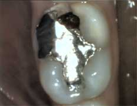

Mercury Poisoning
We all know that it is a dangerous heavy metal in its natural quicksilver form… actually it’s the most toxic non-radioactive element on the Earth. It used to be used in thermometers, but was quickly replaced due to the dangers if it were to break and get out. Now the issue is with the neurotoxin, methylmercury, which is unnaturally released into the environment. In both organic and inorganic form, mercury wreaks havoc on the nervous system, especially in developing nervous system within fetuses. It can penetrate al living cells of the human body, and is known to greatly increase the risk of autism. This calls into question mercury’s use in dental fillings, vaccines, and just about anything containing high fructose corn syrup (which the FDA has known for years about, doing nothing), which is found in nearly every processed food and drink in the United States… including baby food. But the Corn Refiners Association naturally supports this chemical that is “dangerous at any level.”


You are most likely familiar with the term, “mad as a hatter” from Lewis Carroll’s classic children’s book, Alice in Wonderland. But few realize that that the true origin of the saying comes from a disease that was particular in the hat making industry in the 1800’s. A mercury solution was commonly used during the process of turning fur into felt, which caused the hatters to breathe in the fumes of this highly toxic metal, a situation worsened by poor ventilation in most of the workshops. This led to an accumulation of mercury in the workers’ bodies, resulting in symptoms such as trembling, loss of coordination, slurred speech, loosening of teeth, memory loss, depression, irritability and anxiety.
You are first exposure to mercury in the womb, where the mother transfers mercury to the fetus through the placenta. Once the fetus is out of the uterus, there are many ways for mercury levels to exponentially grow.
According to the new Environment America report, “Dirty Energy’s Assault on Our Health: Mercury” coal power plants in the United States emitted 134,365 pounds of mercury pollution in 2009. The report also found that only four states, Texas, Pennsylvania, Ohio, and West Virginia, are responsible for over 35 percent of all mercury pollution from coal power plants in the United States.
Over the past decade Americans have seen a 30 percent increase in airborne mercury pollution. China and India, due to their extremely high levels of population, have been building numerous coal power plants, worsening the problem.
In 2010 the Centers for Disease Control and Prevention stated that the number of diabetics in the United States has grown to nearly 26 million, which is a 10 percent increase over the year 2008. Very few people have connected the dots between this diabetes pandemic and increasing mercury exposure though.
Studies have shown that mercury tends to accumulate in the brains of primates and other animals after they are injected with vaccines. Mercury poisoning has been linked to mental retardation, autism, neurodegeneration, cardiovascular diseases, diabetes, seizures, hyperactivity, dyslexia, and many other nervous system conditions, infantile acrodynia, asperger’s syndrome, PDD-NOS, ADD, and the list goes on.
It damages the pineal gland, central nervous system, endocrine system, kidney, and other organs. It adversely affects the mouth, gums, and teeth. If someone is exposed over long periods of to large amounts of mercury vapor it can result in permanent brain damage and ultimately death.
Mercury and its compounds are particularly toxic to fetuses and infants. Women who have been exposed to mercury during their pregnancy have sometimes given birth to children with serious birth defects, such as Minamata disease.
The biggest challenge with diagnosing heavy metal toxicity is its slow effect that never lets the person affected know for sure if mercury is the root of the problem. Because of this it’s able to destroy the immune system and cause many unrelated diseases and go untreated. A lot of the time doctors will mistakenly try to cure something else, when mercury was at the root of the problem the whole time. Hence, it is a must that you identify certain symptoms that are associated with mercury poisoning:
Psychological Disturbances
Fits of anger, short term memory loss, low self-esteem, inability to sleep,
loss of self-control, sleepiness are some signs of psychological disturbances.
Besides, a person may also suffer from the loss of ability to learn new things
or things that require memorization.
Oral Cavity Problems
Inflammation of the mouth, loss of bone around teeth, ulcerated gums and other
areas in the mouth, darkening of gums, taste of metal, bleeding gums etc.,
point to a possibility of mercury poisoning.
Digestive Tract Problems
Cramps, inflamed colon, diarrhea and other digestive problems are also
indicative of mercury poisoning.
Cardiovascular Problems
Weak pulse, blood pressure changes, chest pain or feeling of pressure in the
chest area are some cardiovascular problems associated with this condition.
Respiratory problems
Weakness and problems with breathing, emphysema, persistent cough are some
respiratory problems that are linked with mercury poisoning.
Neurological Problems
Headaches, vertigo, tinnitus, twitching in various areas of the body (eyelids,
feet etc.), may be warning signs of mercury overexposure.
Almost 20 percent of the children in this country are chronically ill or disabled. That’s a very different situation from what it was 20 or 30 years ago, and there’s no explanation given by the public health authorities as to why that is true, according to Barbara Loe Fisher in the National Vaccine information Center. In children the symptoms are even worst:
- Decreased eye contact
- Repeating certain actions over and over again
- Not responding to their name
- Not looking at an object when pointed
- Poor concentration or attention
- Sensitivity to sensory stimulation
- Common language or speech related symptoms of mercury poisoning include:
- Loss or delay of speech
- Difficulty in understanding and articulating words
- Difficulty in memorizing.
- Also, following common social problems can be attributed to mercury poisoning.
- Withdrawal
- Irritability
- Aggressive behavior
- Night terrors
- Sleep problems
- Mood swings
- In addition other symptoms include auto-immune disorders such as:
- Multiple sclerosis
- Juvenile diabetes
- Asthma
- Chronic ear infections
- Decreased immunity
Although mercury alone isn’t the cause of the above symptoms, it can most certainly lead to these symptoms occurring.
Aside from removing mercury tooth fillings, avoiding vaccines that are tainted with mercury… you can only eat sparingly fish (tuna and dolphins especially) and bottom feeds such as shrimps and prawns. Typically the bigger the fish the higher the concentration of mercury in its body tissue is.
Eco light bulbs contain a mercury vapor which gets released if they are smashed. Avoid breaking indoors; otherwise the room must be fumigated to rid the vapor completely.
Mercury can be removed from the body eating chlorella, wheatgrass, and spirulina on a daily basis. The cilantro herb can specifically help remove mercury from brain tissue.
Common items that mercury can be found in include:
- Quaker Oatmeal to Go bars
- Jack Daniel's Barbecue Sauce
- Hershey's Chocolate Syrup
- Kraft Original Barbecue Sauce
- Nutri-Grain Strawberry Cereal Bars
- Manwich Gold Sloppy Joe
- Market Pantry Grape Jelly
- Smucker's Strawberry Jelly
- Pop-Tarts Frosted Blueberry
- Hunt's Tomato Ketchup
- Wish-Bone Western Sweet & Smooth Dressing
- Coca-Cola Classic: no mercury found on a second test
- Yoplait Strawberry Yogurt
- Minute Maid Berry Punch
- Yoo-hoo Chocolate Drink
- Nesquik Chocolate Milk
- Kemps Fat Free Chocolate Milk
|
Pesticides Fertilizers Amalgam (silver fillings) Drinking water (tap and well) Auto exhaust Felt Plumbing (piping) Bleached flour Processed foods Fabric Softeners Calomel (talc, body powder) Thimerosal vaccines |
Paint pigments and solvents Cinnabar (used in jewelry) Laxatives Cosmetics (mascara) Floor waxes and polishes Wood preservatives Adhesives Batteries Air conditioner filters Fish Fluorescent lamps Eco light bulbs |